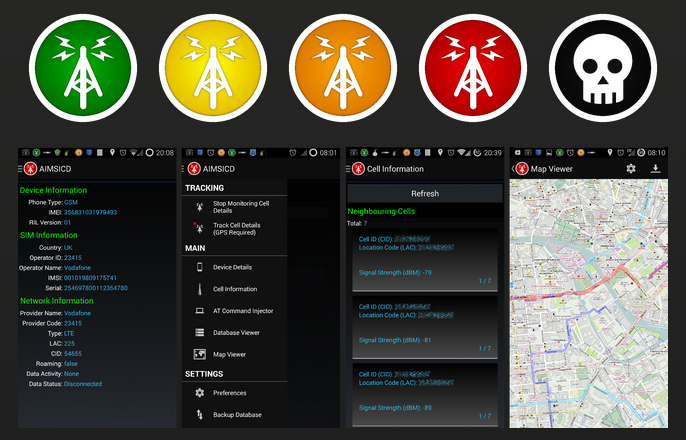
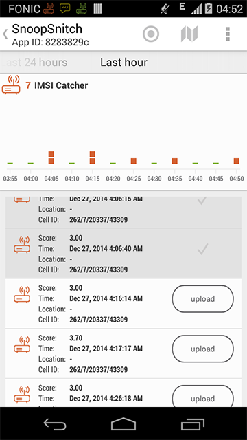
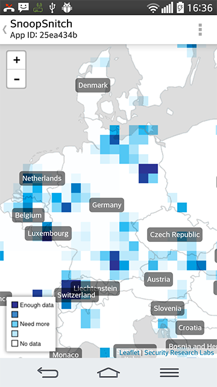

Detection: IMSI Catcher
This section lists tools that help you to determine if 3rd parties intercept your mobile connection.
Android IMSI Catcher Detector (non-root)
Android IMSI Catcher Detector is an Android-based project to detect and avoid fake base stations (IMSI-Catchers) in GSM/UMTS Networks.
Application Goals
- Detect IMSI based device location tracking
- Detect and prevent the use of false BTS towers used for illegal interception
- Detect and prevent the use of broken ciphering algorithms (A5/1) during calls
- Detect and prevent remote hidden application installation
- Detect and prevent remote hidden SMS-based SIM attacks
- Provide counter measures against tracking
- Prevent leakage of sensitive GPS data
- Provide swarm-wise-decision-based cellular service interruption
- Provide secure wifi/wimax alternative data routes through MESH-like networking
- Aims to be recommended and added to the Guardian Project's list of secure Apps
- Aims to be recommended by the SSD Project of the Electronic Frontier Foundation
- Aims to be recommended by Privacy International (and like-minded organizations)
- Does not secure any data transmissions
- Does not prevent already installed rogue applications from full access and spying
Screenshots

Above: Screenshots of the Android App (source: secupwn.github.io/Android-IMSI-Catcher-Detector/)
Download
Available on AIMSICD
Available on GitHub
Available on F-Droid
Price: Free
More Information
For more information visit the Website
SnoopSnitch (root; Qualcomm chipset)
SnoopSnitch collects and analyzes mobile radio data to make you aware of your mobile network security and to warn you about threats like fake base stations (IMSI catchers), user tracking and over-the-air updates. To use SnoopSnitch, a rooted device with a Qualcomm chipset running stock Android 4.1 or higher is required. Unfortunately, custom ROMs are unsupported at the moment as they lack necessary proprietary drivers.
This application uses data contributed by other users. By choosing to upload your measurement results or security events, you can help improve this data base and support future research. SnoopSnitch will ask for confirmation whenever any of your information is uploaded to our servers. All uploads are encrypted. Note that uploaded radio traces may contain private information as a side-effect.
The following permissions are required:
- ACCESS_SUPERUSER: Open Qualcomm diagnosis interface to capture radio data
- CALL_PHONE, READ_PHONE_STATE, SEND_SMS, RECEIVE_SMS: Generate mobile network traffic recorded in active tests
- GET_TASKS: Retrieve state of helper processes interacting with diagnosis interface
- WAKE_LOCK: Acquire CPU for long-running analysis steps
- ACCESS_FINE_LOCATION, ACCESS_COARSE_LOCATION: record location of IMSI catchers and security events if configured
- INTERNET: Download new data from gsmmap.org, upload radio traces and debug logs upon request
- ACCESS_NETWORK_STATE: Postpone uploads until network is available
SnoopSnitch is open-source software released under the GPL version 3.
Screenshots
 
Above: Screenshots of the Android App (source: https://opensource.srlabs.de/projects/snoopsnitch)
Download
Available in the Google Play Store
Price: Free
More Information
For more information visit the Website